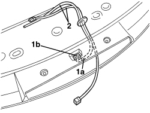

5550D86 THIRD BRAKE LIGHT CABLE LOOM - R.R. OR REPLACE
- Path
- Procedures > 55 ELECTRICAL EQUIPMENT > 5550 WARNING AND MANOEUVRING INDICATORS > 5550D BRAKE AND REVERSING LIGHTS > 5550D86 THIRD BRAKE LIGHT CABLE LOOM - R.R. OR REPLACE
- Kind
- repair procedure (removal / refitting; the operation number is the code)
- Applies to
- all engines; all production periods
- Interactive page
- https://sloeber94.github.io/elrnDB-aBrrSpdr/en/#/946002430
Applies to: all engines; all production periods
 Removing
Removing
 Refitting
RefittingOp. 7015A05 TAILGATE LOWER INTERIOR PANEL-R R
Op. 7015A06 TAILGATE UPPER INTERIOR PANEL - R.R.
Op. 7210G76 REAR SPOILER - R.R.
Op. 5550D16 THIRD BRAKE LIGHT - R+R
1. Disconnect the pipe (1a) from the rearscreen washer jet (1b).
2. Remove the cable loom for the third brake light with the rearscreen washer fluid pipe.

Applies to: all engines; all production periods
Refitting
Removing- Check that the cable loom is not damaged and that the individual conductors are correctly fastened to the connections.
If necessary, carry out continuity tests.
- Position the cable loom for the third brake light with the rearscreen washer fluid pipe.
- Connect the pipe to the rearscreen washer jet.
Op. 5550D16 THIRD BRAKE LIGHT - R+R
Op. 7210G76 REAR SPOILER - R.R.